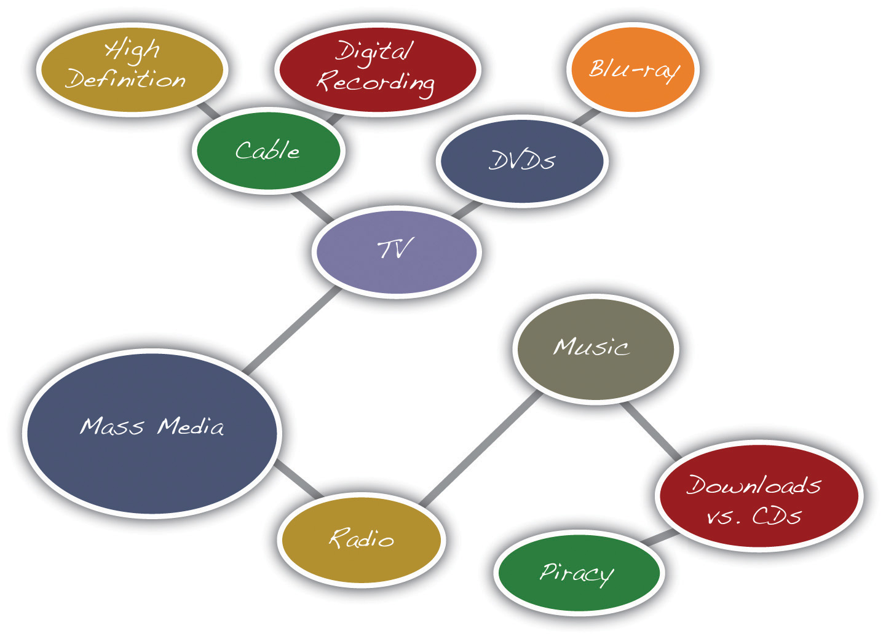
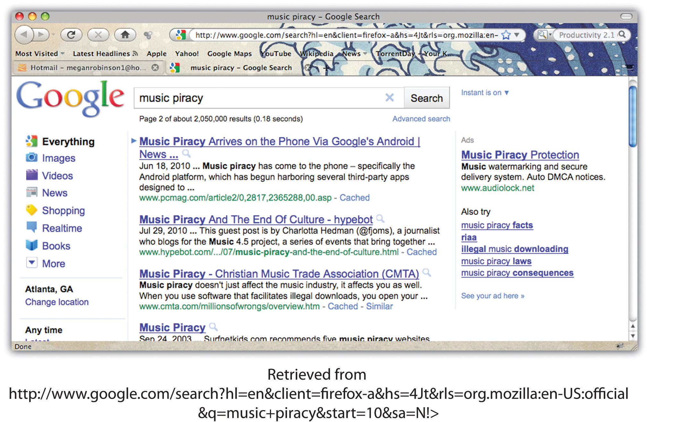

If you think that a blank sheet of paper or a blinking cursor on the computer screen is a scary sight, you are not alone. Many writers, students, and employees find that beginning to write can be intimidating. When faced with a blank page, however, experienced writers remind themselves that writing, like other everyday activities, is a process. Every process, from writing to cooking, bike riding, and learning to use a new cell phone, will get significantly easier with practice.
Just as you need a recipe, ingredients, and proper tools to cook a delicious meal, you also need a plan, resources, and adequate time to create a good written composition. In other words, writing is a process that requires following steps and using strategies to accomplish your goals.
These are the five steps in the writing process:
Effective writing can be simply described as good ideas that are expressed well and arranged in the proper order. This chapter will give you the chance to work on all these important aspects of writing. Although many more prewriting strategies exist, this chapter covers six: using experience and observations, freewriting, asking questions, brainstorming, mapping, and searching the Internet. Using the strategies in this chapter can help you overcome the fear of the blank page and confidently begin the writing process.
Prewriting is the stage of the writing process during which you transfer your abstract thoughts into more concrete ideas in ink on paper (or in type on a computer screen). Although prewriting techniques can be helpful in all stages of the writing process, the following four strategies are best used when initially deciding on a topic:
At this stage in the writing process, it is OK if you choose a general topic. Later you will learn more prewriting strategies that will narrow the focus of the topic.
In addition to understanding that writing is a process, writers also understand that choosing a good general topic for an assignment is an essential step. Sometimes your instructor will give you an idea to begin an assignment, and other times your instructor will ask you to come up with a topic on your own. A good topic not only covers what an assignment will be about but also fits the assignment’s purposeThe reason(s) why a writer creates a document. and its audienceThe individual(s) or group(s) whom the writer intends to address..
In this chapter, you will follow a writer named Mariah as she prepares a piece of writing. You will also be planning one of your own. The first important step is for you to tell yourself why you are writing (to inform, to explain, or some other purpose) and for whom you are writing. Write your purpose and your audience on your own sheet of paper, and keep the paper close by as you read and complete exercises in this chapter.
My purpose: ____________________________________________
My audience: ____________________________________________
When selecting a topic, you may also want to consider something that interests you or something based on your own life and personal experiences. Even everyday observations can lead to interesting topics. After writers think about their experiences and observations, they often take notes on paper to better develop their thoughts. These notes help writers discover what they have to say about their topic.
Have you seen an attention-grabbing story on your local news channel? Many current issues appear on television, in magazines, and on the Internet. These can all provide inspiration for your writing.
Reading plays a vital role in all the stages of the writing process, but it first figures in the development of ideas and topics. Different kinds of documents can help you choose a topic and also develop that topic. For example, a magazine advertising the latest research on the threat of global warming may catch your eye in the supermarket. This cover may interest you, and you may consider global warming as a topic. Or maybe a novel’s courtroom drama sparks your curiosity of a particular lawsuit or legal controversy.
After you choose a topic, critical reading is essential to the development of a topic. While reading almost any document, you evaluate the author’s point of view by thinking about his main idea and his support. When you judge the author’s argument, you discover more about not only the author’s opinion but also your own. If this step already seems daunting, remember that even the best writers need to use prewriting strategies to generate ideas.
The steps in the writing process may seem time consuming at first, but following these steps will save you time in the future. The more you plan in the beginning by reading and using prewriting strategies, the less time you may spend writing and editing later because your ideas will develop more swiftly.
Prewriting strategies depend on your critical reading skills. Reading prewriting exercises (and outlines and drafts later in the writing process) will further develop your topic and ideas. As you continue to follow the writing process, you will see how Mariah uses critical reading skills to assess her own prewriting exercises.
FreewritingA prewriting strategy in which writers write freely about any topic for a set amount of time (usually three to five minutes). is an exercise in which you write freely about any topic for a set amount of time (usually three to five minutes). During the time limit, you may jot down any thoughts that come to your mind. Try not to worry about grammar, spelling, or punctuation. Instead, write as quickly as you can without stopping. If you get stuck, just copy the same word or phrase over and over until you come up with a new thought.
Writing often comes easier when you have a personal connection with the topic you have chosen. Remember, to generate ideas in your freewriting, you may also think about readings that you have enjoyed or that have challenged your thinking. Doing this may lead your thoughts in interesting directions.
Quickly recording your thoughts on paper will help you discover what you have to say about a topic. When writing quickly, try not to doubt or question your ideas. Allow yourself to write freely and unselfconsciously. Once you start writing with few limitations, you may find you have more to say than you first realized. Your flow of thoughts can lead you to discover even more ideas about the topic. Freewriting may even lead you to discover another topic that excites you even more.
Look at Mariah’s example. The instructor allowed the members of the class to choose their own topics, and Mariah thought about her experiences as a communications major. She used this freewriting exercise to help her generate more concrete ideas from her own experience.
Some prewriting strategies can be used together. For example, you could use experience and observations to come up with a topic related to your course studies. Then you could use freewriting to describe your topic in more detail and figure out what you have to say about it.
Freewrite about one event you have recently experienced. With this event in mind, write without stopping for five minutes. After you finish, read over what you wrote. Does anything stand out to you as a good general topic to write about?
Who? What? Where? When? Why? How? In everyday situations, you pose these kinds of questions to get more information. Who will be my partner for the project? When is the next meeting? Why is my car making that odd noise? Even the title of this chapter begins with the question “How do I begin?”
You seek the answers to these questions to gain knowledge, to better understand your daily experiences, and to plan for the future. Asking these types of questions will also help you with the writing process. As you choose your topic, answering these questions can help you revisit the ideas you already have and generate new ways to think about your topic. You may also discover aspects of the topic that are unfamiliar to you and that you would like to learn more about. All these idea-gathering techniques will help you plan for future work on your assignment.
When Mariah reread her freewriting notes, she found she had rambled and her thoughts were disjointed. She realized that the topic that interested her most was the one she started with, the media. She then decided to explore that topic by asking herself questions about it. Her purpose was to refine media into a topic she felt comfortable writing about. To see how asking questions can help you choose a topic, take a look at the following chart that Mariah completed to record her questions and answers. She asked herself the questions that reporters and journalists use to gather information for their stories. The questions are often called the 5WH questionsThe questions that reporters and journalists use to gather information for their stories and that writers use in the writing process: Who? What? Where? When? Why? How?, after their initial letters.
Figure 8.1 Asking Questions

Prewriting is very purpose driven; it does not follow a set of hard-and-fast rules. The purpose of prewriting is to find and explore ideas so that you will be prepared to write. A prewriting technique like asking questions can help you both find a topic and explore it. The key to effective prewriting is to use the techniques that work best for your thinking process. Freewriting may not seem to fit your thinking process, but keep an open mind. It may work better than you think. Perhaps brainstorming a list of topics might better fit your personal style. Mariah found freewriting and asking questions to be fruitful strategies to use. In your own prewriting, use the 5WH questions in any way that benefits your planning.
Choose a general topic idea from the prewriting you completed in Note 8.9 "Exercise 1". Then read each question and use your own paper to answer the 5WH questions. As with Mariah when she explored her writing topic for more detail, it is OK if you do not know all the answers. If you do not know an answer, use your own opinion to speculate, or guess. You may also use factual information from books or articles you previously read on your topic. Later in the chapter, you will read about additional ways (like searching the Internet) to answer your questions and explore your guesses.
5WH Questions
Who?
_____________________________________________________
What?
_____________________________________________________
Where?
_____________________________________________________
When?
_____________________________________________________
Why?
_____________________________________________________
How?
_____________________________________________________
Now that you have completed some of the prewriting exercises, you may feel less anxious about starting a paper from scratch. With some ideas down on paper (or saved on a computer), writers are often more comfortable continuing the writing process. After identifying a good general topic, you, too, are ready to continue the process.
Write your general topic on your own sheet of paper, under where you recorded your purpose and audience. Choose it from among the topics you listed or explored during the prewriting you have done so far. Make sure it is one you feel comfortable with and feel capable of writing about.
My general topic: ____________________________________________
You may find that you need to adjust your topic as you move through the writing stages (and as you complete the exercises in this chapter). If the topic you have chosen is not working, you can repeat the prewriting activities until you find a better one.
The prewriting techniques of freewriting and asking questions helped Mariah think more about her topic, but the following prewriting strategies can help her (and you) narrow the focus of the topic:
Narrowing the focus means breaking up the topic into subtopics, or more specific points. Generating lots of subtopics will help you eventually select the ones that fit the assignment and appeal to you and your audience.
After rereading her syllabus, Mariah realized her general topic, mass media, is too broad for her class’s short paper requirement. Three pages are not enough to cover all the concerns in mass media today. Mariah also realized that although her readers are other communications majors who are interested in the topic, they may want to read a paper about a particular issue in mass media.
BrainstormingA prewriting strategy similar to list making. Writers start with a general category and list specific items that fall into the category. is similar to list making. You can make a list on your own or in a group with your classmates. Start with a blank sheet of paper (or a blank computer document) and write your general topic across the top. Underneath your topic, make a list of more specific ideas. Think of your general topic as a broad category and the list items as things that fit in that category. Often you will find that one item can lead to the next, creating a flow of ideas that can help you narrow your focus to a more specific paper topic.
The following is Mariah’s brainstorming list:

From this list, Mariah could narrow her focus to a particular technology under the broad category of mass media.
Imagine you have to write an e-mail to your current boss explaining your prior work experience, but you do not know where to start. Before you begin the e-mail, you can use the brainstorming technique to generate a list of employers, duties, and responsibilities that fall under the general topic “work experience.”
Idea mappingA prewriting strategy in which writers cluster ideas on paper using circles, lines, and arrows. allows you to visualize your ideas on paper using circles, lines, and arrows. This technique is also known as clustering because ideas are broken down and clustered, or grouped together. Many writers like this method because the shapes show how the ideas relate or connect, and writers can find a focused topic from the connections mapped. Using idea mapping, you might discover interesting connections between topics that you had not thought of before.
To create an idea map, start with your general topic in a circle in the center of a blank sheet of paper. Then write specific ideas around it and use lines or arrows to connect them together. Add and cluster as many ideas as you can think of.
In addition to brainstorming, Mariah tried idea mapping. Review the following idea map that Mariah created:
Figure 8.2 Idea Map
Notice Mariah’s largest circle contains her general topic, mass media. Then, the general topic branches into two subtopics written in two smaller circles: television and radio. The subtopic television branches into even more specific topics: cable and DVDs. From there, Mariah drew more circles and wrote more specific ideas: high definition and digital recording from cable and Blu-ray from DVDs. The radio topic led Mariah to draw connections between music, downloads versus CDs, and, finally, piracy.
From this idea map, Mariah saw she could consider narrowing the focus of her mass media topic to the more specific topic of music piracy.
Using search engines on the Internet is a good way to see what kinds of websites are available on your topic. Writers use search engines not only to understand more about the topic’s specific issues but also to get better acquainted with their audience.
Look back at the chart you completed in Note 8.12 "Exercise 2". Did you guess at any of the answers? Searching the Internet may help you find answers to your questions and confirm your guesses. Be choosy about the websites you use. Make sure they are reliable sources for the kind of information you seek.
When you search the Internet, type some key words from your broad topic or words from your narrowed focus into your browser’s search engine (many good general and specialized search engines are available for you to try). Then look over the results for relevant and interesting articles.
Results from an Internet search show writers the following information:
If the search engine results are not what you are looking for, revise your key words and search again. Some search engines also offer suggestions for related searches that may give you better results.
Mariah typed the words music piracy from her idea map into the search engine Google.
Figure 8.3 Useful Search Engine Results
Not all the results online search engines return will be useful or reliable. Give careful consideration to the reliability of an online source before selecting a topic based on it. Remember that factual information can be verified in other sources, both online and in print. If you have doubts about any information you find, either do not use it or identify it as potentially unreliable.
The results from Mariah’s search included websites from university publications, personal blogs, online news sources, and lots of legal cases sponsored by the recording industry. Reading legal jargon made Mariah uncomfortable with the results, so she decided to look further. Reviewing her map, she realized that she was more interested in consumer aspects of mass media, so she refocused her search to media technology and the sometimes confusing array of expensive products that fill electronics stores. Now, Mariah considers a paper topic on the products that have fed the mass media boom in everyday lives.
In Note 8.12 "Exercise 2", you chose a possible topic and explored it by answering questions about it using the 5WH questions. However, this topic may still be too broad. Here, in Note 8.21 "Exercise 3", choose and complete one of the prewriting strategies to narrow the focus. Use either brainstorming, idea mapping, or searching the Internet.
Collaboration
Please share with a classmate and compare your answers. Share what you found and what interests you about the possible topic(s).
Prewriting strategies are a vital first step in the writing process. First, they help you first choose a broad topic and then they help you narrow the focus of the topic to a more specific idea. An effective topic ensures that you are ready for the next step.
Developing a Good Topic
The following checklist can help you decide if your narrowed topic is a good topic for your assignment.
With your narrowed focus in mind, answer the bulleted questions in the checklist for developing a good topic. If you can answer “yes” to all the questions, write your topic on the line. If you answer “no” to any of the questions, think about another topic or adjust the one you have and try the prewriting strategies again.
My narrowed topic: ____________________________________________